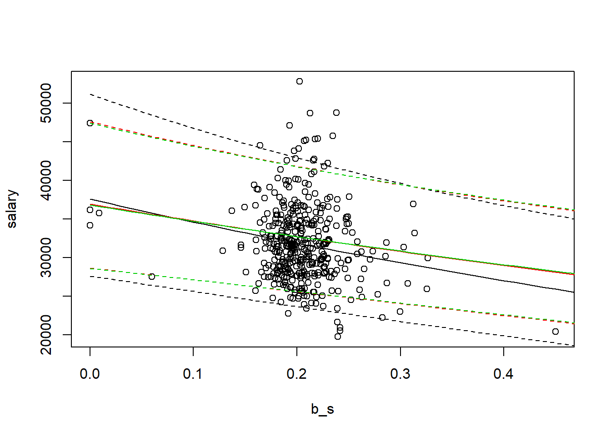
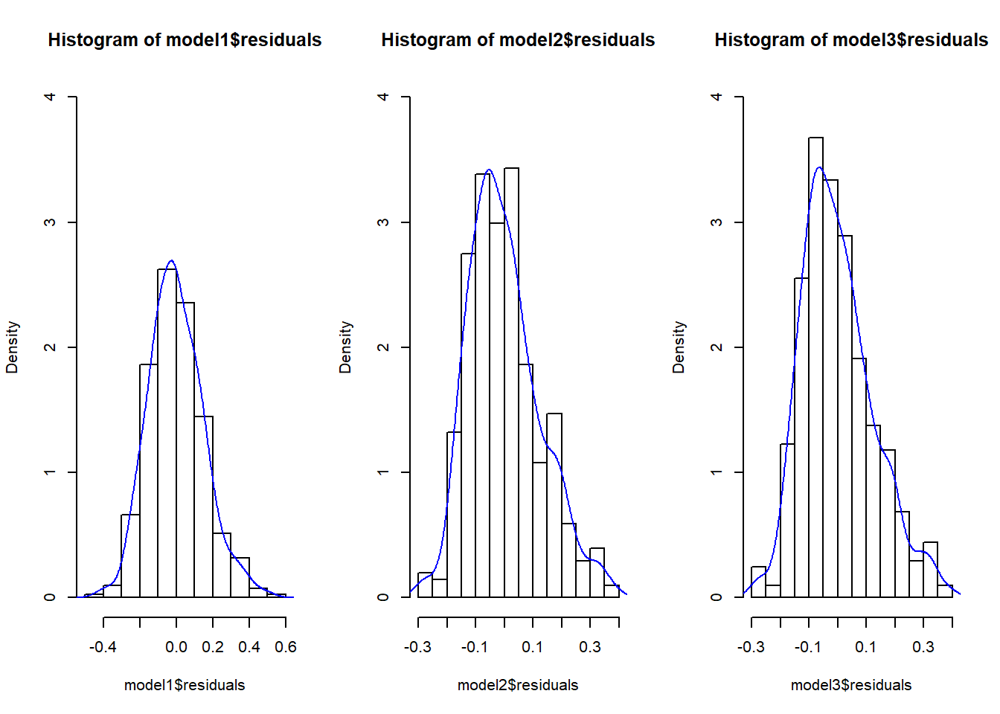

By now, you should be already familiar with loading data, obtaining summary statistics as well as running multiple regressions in R. As a researcher, you want your message to be lound and clear for those are interested in your work and take the time to read it. Therefore, you should always aim to provide the results in the most convenient format.
In this section, we will introduce a package called stargazer. It creates an output that incorporates a multiple regressions into one well-formatted table.
Say you are intereted in studying a salary-pension tradeoff. In other words, you are asking: do people take lower pay if they are promised higher pension. Data set meap93 in package wooldridge looks at salary-pension tradeoff for teachers in 1993.
To answer the question, however, we first need to do some algebraic manipulation. Define total compensation as salary and benefits.
\[ totcomp = salary + b \]
Rearrangin the equation yields the following.
\[ totcomp = salary + benefits \quad \rightarrow \quad totcomp = salary (1 + benefits/salary) \]
Taking the logarithms of both sides yields the following.
\[ \log(totcomp) = \log[salary(1 + benefits/salary)] = \log(salary) + \log(1 + benefits/salary) \]
Knowing that \(log(1+x)\approx x\) for small changes in \(x\) we get the following.
\[ \log(totcomp) = \log(salary) + benefits/salary \]
Since we are interested in trade-off between salary and pension benefits, we consider the following simple (two-variable) regression model:
\[ \log(salary) = \beta_0 + \beta_1 (benefits/salary) + u \]
We also consider two other models that control for the school characteristics.
\[ \log(salary) = \beta_0 + \beta_1 (benefits/salary) + beta_2 \log(enroll) +\beta_3 log(staff) + u \]
\[ \log(salary) = \beta_0 + \beta_1 (benefits/salary) + beta_2 \log(enroll) +\beta_3 log(staff) +\beta_4 (droprate) +\beta_5 (gradrate)+ u \]
See the R code below to execute the above example.
data(meap93,package='wooldridge')
#Create a new variable b_s=benefits/salary
meap93$b_s <- meap93$benefits / meap93$salary
model1= lm(log(salary) ~ b_s , data=meap93)
model2= lm(log(salary) ~ b_s+log(enroll)+log(staff), data=meap93)
model3= lm(log(salary) ~ b_s+log(enroll)+log(staff)+droprate+gradrate, data=meap93)To plot the three models side by side for an easy comparison of the results, use the R code below.
library(stargazer)
stargazer(list(model1,model2,model3),type="text",keep.stat=c("n","rsq"))##
## ==========================================
## Dependent variable:
## -----------------------------
## log(salary)
## (1) (2) (3)
## ------------------------------------------
## b_s -0.825*** -0.605*** -0.589***
## (0.200) (0.165) (0.165)
##
## log(enroll) 0.087*** 0.088***
## (0.007) (0.007)
##
## log(staff) -0.222*** -0.218***
## (0.050) (0.050)
##
## droprate -0.0003
## (0.002)
##
## gradrate 0.001
## (0.001)
##
## Constant 10.523*** 10.844*** 10.738***
## (0.042) (0.252) (0.258)
##
## ------------------------------------------
## Observations 408 408 408
## R2 0.040 0.353 0.361
## ==========================================
## Note: *p<0.1; **p<0.05; ***p<0.01We find that the estimated coefficient for (b/s) is negative and statistically significant in all three models. Let’s say you want to show how the slopes vary visually. First, using predict command, we will fit the regression line.
m1predict=predict(model1, interval="prediction", newdata=data.frame(b_s=seq(from=0, to=0.5, by=0.01)))
m2predict=predict(model2, interval="prediction", newdata=data.frame(b_s=seq(from=0, to=0.5, by=0.01),enroll=mean(meap93$enroll),staff=mean(meap93$staff)))
m3predict=predict(model3, interval="prediction", newdata=data.frame(b_s=seq(from=0, to=0.5, by=0.01),enroll=mean(meap93$enroll),staff=mean(meap93$staff),droprate=mean(meap93$droprate),gradrate=mean(meap93$gradrate)))
plot(salary~b_s,data=meap93)
#First model
a1=1/length(fitted(model1)) * sum(exp(model1$residuals))
lines(exp(m1predict[,1])*a1~seq(from=0, to=0.5, by=0.01), col=1)
lines(exp(m1predict[,2])*a1~seq(from=0, to=0.5, by=0.01), col=1,lty=2)
lines(exp(m1predict[,3])*a1~seq(from=0, to=0.5, by=0.01), col=1,lty=2)
#Second model:
a2=1/length(fitted(model2)) * sum(exp(model2$residuals))
lines(exp(m2predict[,1])*a2~seq(from=0, to=0.5, by=0.01), col=2)
lines(exp(m2predict[,2])*a2~seq(from=0, to=0.5, by=0.01), col=2,lty=2)
lines(exp(m2predict[,3])*a2~seq(from=0, to=0.5, by=0.01), col=2,lty=2)
#Third model:
a3=1/length(fitted(model3)) * sum(exp(model3$residuals))
lines(exp(m3predict[,1])*a3~seq(from=0, to=0.5, by=0.01), col=3)
lines(exp(m3predict[,2])*a3~seq(from=0, to=0.5, by=0.01), col=3,lty=2)
lines(exp(m3predict[,3])*a3~seq(from=0, to=0.5, by=0.01), col=3,lty=2)
After we control for school specific differences, we find that the slope is less negative (the trade-off is smaller).
Finally, we can compare the histograms of the residuals of all three models.
par(mfrow=c(1,3))
hist(model1$residuals,freq=FALSE,ylim=c(0,4))
lines(density(model1$residuals),col=4)
hist(model2$residuals,freq=FALSE,ylim=c(0,4))
lines(density(model2$residuals),col=4)
hist(model3$residuals,freq=FALSE,ylim=c(0,4))
lines(density(model3$residuals),col=4)